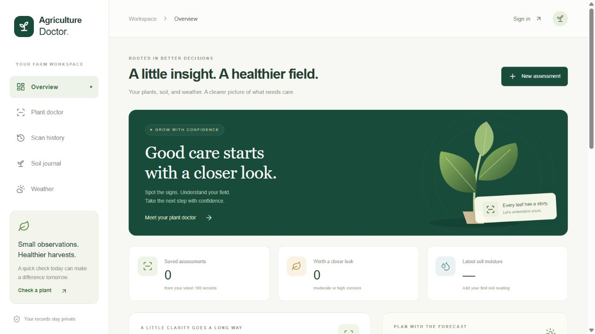
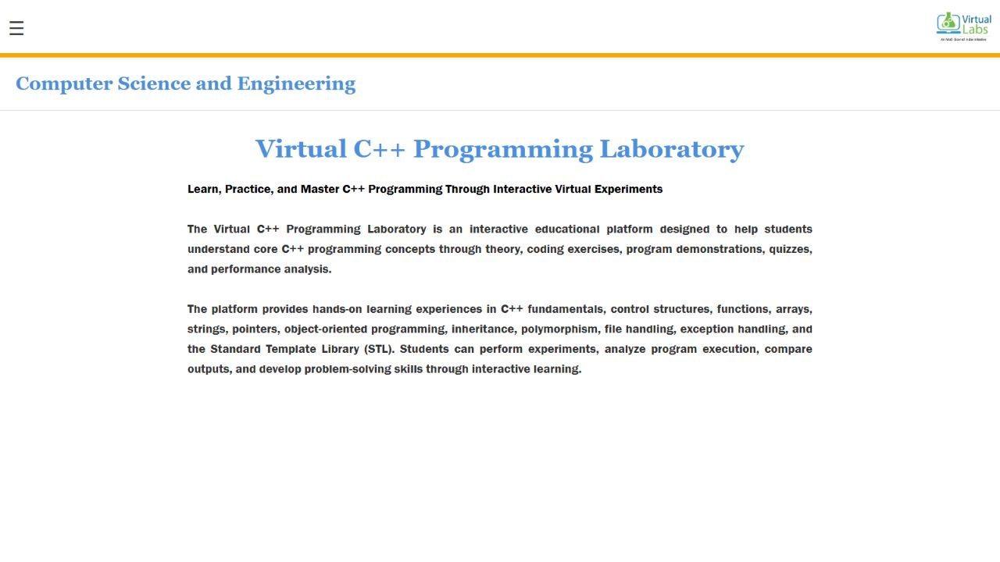
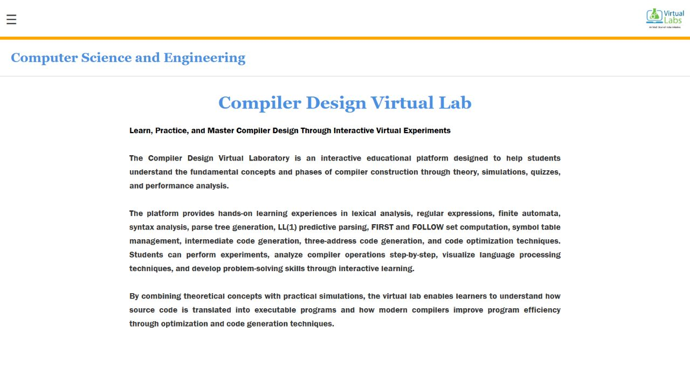

Open to internship opportunities
FULL-STACK & FRONTEND DEVELOPER
Harsh Sahu.
Interfaces with purpose. Products that work.
I’m a Computer Science student building responsive interfaces, full-stack applications, and practical AI experiences. Open to software development and frontend internships across India.
About
I'm a final-year B.Tech CSE student who likes building things people can use right away. I've built interactive virtual labs, an AI waste-segregation prototype, and Agriculture Doctor: a full-stack farming workspace with authenticated accounts, private storage, and external APIs. I also lead student communities, so I'm as comfortable organising a hackathon as debugging a layout.
- 7.5CGPA out of 10
- 4Projects built
- 4Leadership roles
- Full stackFrontend · APIs · Database
Skills
Frontend
AI/ML
Tools
Core CS
Experience
-
UI/Frontend Developer
- Built responsive web interfaces for community initiatives.
- Redesigned website layouts, improving user engagement and visual consistency.
- Designed visual content and UI components for community events.
-
AI for Sustainability Virtual Intern
- Built a waste segregation assistant prototype with a ResNet-50 CNN, reaching 96% classification confidence.
- Developed a responsive web app with image upload, real-time inference simulation and an impact analytics dashboard.
- Added explainable predictions (Grad-CAM) and edge inference for privacy-preserving processing.
- View live project
-
Java Developer Intern
- Completed hands-on training in Core Java and object-oriented programming.
- Solved coding exercises and learned data structures and algorithms fundamentals.
SELECTED WORK
Built to be used.
A closer look at the interfaces
behind the projects.
01 / FEATURED FULL-STACK PROJECT
Agriculture Doctor.
A farming workspace that brings plant photo assessments, soil records, and local weather together. Built with a real backend, authenticated accounts, and a private database.
- Supabase Auth and user-owned PostgreSQL records
- Private image storage and Gemini image assessments
- Live weather, soil journal, and saved scan history
Explore the architecture +
Next.js API routes run on Vercel. Supabase handles authentication, PostgreSQL, and private photo storage with Row Level Security. Gemini provides photo assessments through Vercel AI Gateway; Open-Meteo supplies weather data. Images are validated and re-encoded, and a database quota limits analysis attempts.
12 automated tests and production CI passed. Photo assessments communicate uncertainty; they are not confirmed laboratory diagnoses.

Explore the interface above. Use the live app to upload photos and save records.
02 / INTERACTIVE LEARNING
Virtual C++ Programming Laboratory
Interactive lab with theory modules, coding exercises, program demos and quizzes, from fundamentals to OOP, file handling and STL.

Visit project ↗03 / COMPUTER SCIENCE LAB
Compiler Design Virtual Lab
Educational platform covering lexical analysis, parsing and code optimization, with simulations and parse-tree visualization.

Visit project ↗Web-Designing-Aimt
A modern, performance-driven marketing agency website with a clean, premium look that showcases services, strategy and results.
Design & frontend sourceCode
Leadership
Secretary, CSI Ambalika
Run chapter operations and organise technical workshops, seminars and competitions.
Campus Lead, Open Source Connect India
Promote open source on campus and organise outreach activities and events.
Community Manager, APYX
Organised the CodeBlitz Hackathon and led a technical workshop in Lucknow.
Coordinator, YUCI
Coordinated climate awareness events, workshops and campaigns on campus.
Education
B.Tech, Computer Science and Engineering
CGPA 7.5 / 10
Honors
- Shortlisted for Smart India Hackathon (SIH) and IEEE Ideathon
- Completed ChatGPT and Generative AI Workshop at IIT Delhi
- Participated in E-Bootathon at IIT Kanpur
Let's build something together
I'm open to on-site internships across India in software development or frontend engineering.